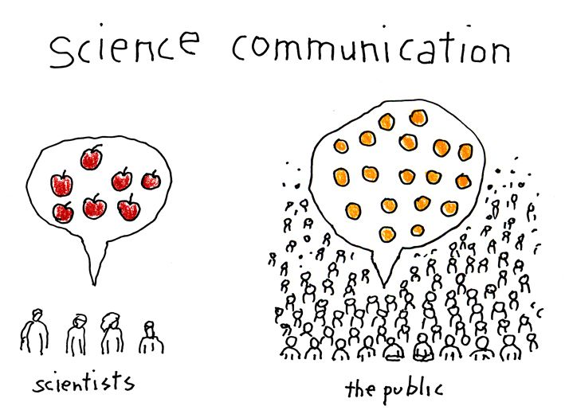

Words are incredible. Words can be used to express ideas, comfort others, inspire movements to spark change, create music that can unite people from different cultures…the list goes on. Equally so, however, words can be used to spread misinformation, cause confusion that leads to conflict and distrust, especially when taken out of context.
You may be wondering why I am talking about words when the title of this article is about scientists and public engagement? Simply put, scientists are in the “words business”. All year round, we are writing papers to summarise and disseminate our findings to the rest of the scientific community in addition to writing grant applications to fund our research. One important thing to note here is that a science career can be sustained (very successfully) through these two activities alone. As a result, science communication is a choice. Evidently, a choice that some scientists are hesitant to make - but why?
Grant applications and research papers are structured pieces of writing, which are grounded within the scientific method. It is a very different style of thinking and communicating compared to engaging with the public. Since not all scientists are trained in communicating effectively to others outside of their field, the resulting effect is the oversimplification and sensationalisation of scientific messages due to external manipulation of the messaging. As a result, it can be argued that the credibility of science has been negatively impacted by the poor science communication that is prevalent in society. Don’t believe me? Ok, answer the following:
Let me be clear here. The issue is not that there are contrary findings present on each of these topics. In fact, if you search almost any topic in science you will find it rare to obtain a consensus on any issue. Whilst data never lies, it is our interpretation and explanation of data/trends, which can result in conflicting views. This is why we have the scientific method, which helps us remove our biases (as much as possible), test our theories and develop lines of evidence which hopefully converge to create widely held scientific models about the world. These scientific models, however, are always susceptible to change with emerging evidence.
Therefore, a key issue is that scientific findings can be oversimplified or sensationalized to the public, resulting in unnecessary confusion. This can be a deterrent for scientists to commit the time and effort to disseminate their work to the public, when the mantra of “publish or perish” is very real in today’s academic culture.
So what is the solution?
Whilst science communication is a choice, I hope that it is a choice that more scientists make. A possible solution is to not only state our findings, but also explain our justification and reasoning to the public. Secondly, the implementation of a curriculum within schools that can foster critical thinking amongst students is a key tool for winning the war on misinformation. Since the educational curriculum is a slow changing machine, this means that more scientists needs to be engaging with their local schools to help develop extracurricular programs or experiences for those students that help develop their fundamental critical thinking skills.
I believe that there is an incredible thirst and desire for scientific knowledge amongst the public, which can be seen through the interest in the work that scientists such as Emma Johnston, Muireann Irish, Michelle Simmons and have conducted. As a result, I believe that there is an increasing responsibility for scientists to make an impact and engage with the community so that poor quality or misrepresented science is quickly identified, questioned and evaluated during public discourse.